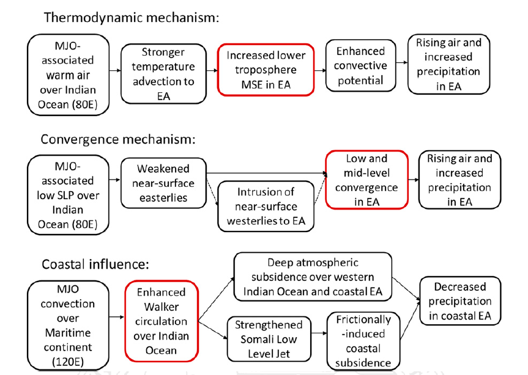
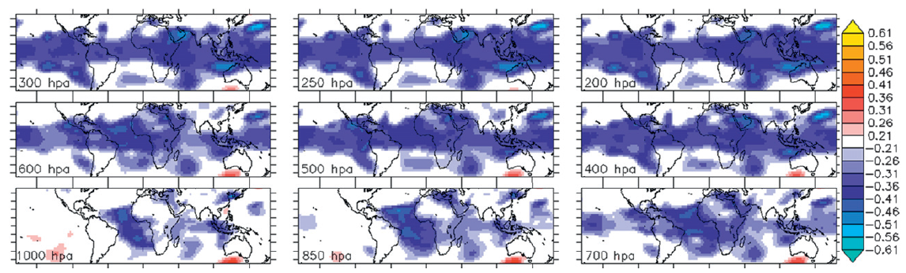

Semi-Automated Prediction for Any Geographic Location Using Shiny
This is an interactive R-Package, built using shiny, that helps to predict precipitation over any geographic region of interest. The user can extract predictand by drawing a polygon over a region. They can also upload a time series rainfall data. Then, they select data sets to extract features from. The user has the option to select sea surface temperature, sea level pressure, winds at different pressure levels, etc. They can also upload their own predictors. The package generates correlations of the variables selected with the predictand. The user also has the option to generate composites of the variables, which is useful to catch non-linear relationships, based on the predictand. Next, the user can extract predictors by drawing polygons over the regions that show strong correlations (composites). Then, the user can select some or all of the machine learning algorithms provided. Provided models include Linear regression models (GLM, SGLM), Tree-based models (bagging, random forest, boosting), Support vector Machines, Artificial Neural Network, and other non-linear models (GAM, SGAM, MARS). Finally, the user can download a presentation of the results in PDF or HTML format. The video below is a quick demo.
This work originated from a course project that I did to generate long term climatology and trend of rainfall and temperature over any selected region in Africa (Slidify presentation here and the app is on RStudio).
The Madden-Julian Oscillation, wave dynamics and convection over West Africa
95th AMS Annual Meeting
Berhane et al. 2015
Impacts of the Madden-Julian Oscillation over East Africa (EA)
Berhane and Zaitchik, 2014
Sub-seasonal analysis of rainfall over the Blue Nile River basin

Correlations of Blue Nile June precipitation with geopotential height at various pressure levels
Berhane et al. 2014
Model based assessment of potential impacts of climate change on the flow of the main headwaters of the Nile River: Equatorial Lakes Region and Blue Nile Basins